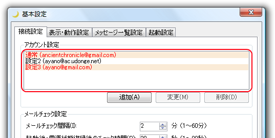

初回起動時には、設定ファイルがないという旨のダイアログボックスが表示されます。なのですかさず [OK] をクリックして基本設定ウィンドウを表示します。

基本設定ウィンドウが表示されたら、アカウント設定の [追加] をクリックしてください。

アカウント設定ウィンドウで、必要な情報を入力し、必要に応じて接続テストをおこなった上、[OK] をクリックしてアカウントを追加してください。
アカウント名とパスワードは必ず設定してください。
 アカウント設定ウィンドウ |
 無記入の場合はエラーを表示します。 |
なお、アカウントはほぼ無制限に設定可能ですが、ドメインは重複して登録できません。（設定自体は可能ですが、メッセージ一覧で不具合が発生します。）
重複して登録された場合は、基本設定ウィンドウの [アカウント設定] で該当部分が赤く表示されます。

設定が完了したら、[OK] をクリックしてください。メインコンソールが表示されます。